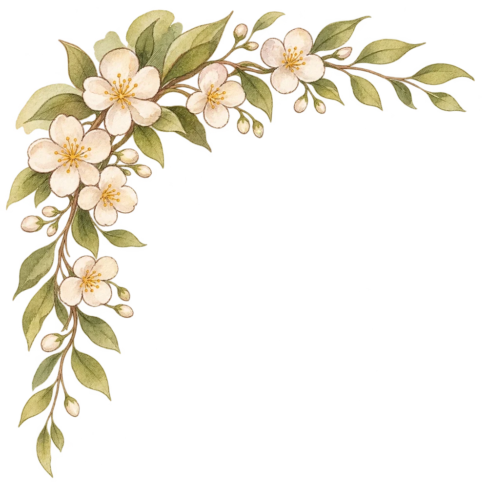

NƠI KÝ ỨC BẮT ĐẦU
Lớp học năm ấy...
Kính gửi thầy cô,Những điều thương mến
vẫn luôn ở đây.20/11
TRI ÂN
vẫn luôn ở đây.20/11
TRI ÂN
GÓI GHÉM CẢ MỘT MIỀN THƯƠNG NHỚ
Một lá thư, ngàn lời chưa nói
Chạm vào dấu sáp để mở những điều thương mến
NHỮNG TRANG THƯƠNG MẾN20 / 11

✧
Từ trái tim học trò
Gửi thầy cô kính yêu
Chạm vào từng bức tranh để ngắm nhìn những điều thương mến.
VÀ CÒN MỘT ĐIỀU MUỐN GỬI...
Những khoảnh khắc còn mãi
Một thước phim nhỏ, lưu giữ những yêu thương thật lớn.
Chưa phát được video. Bạn có thể tải video về hoặc nhấn “Khép lá thư”.